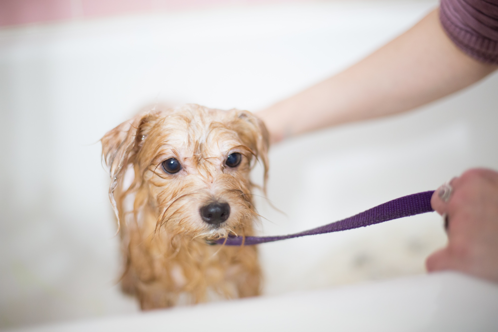
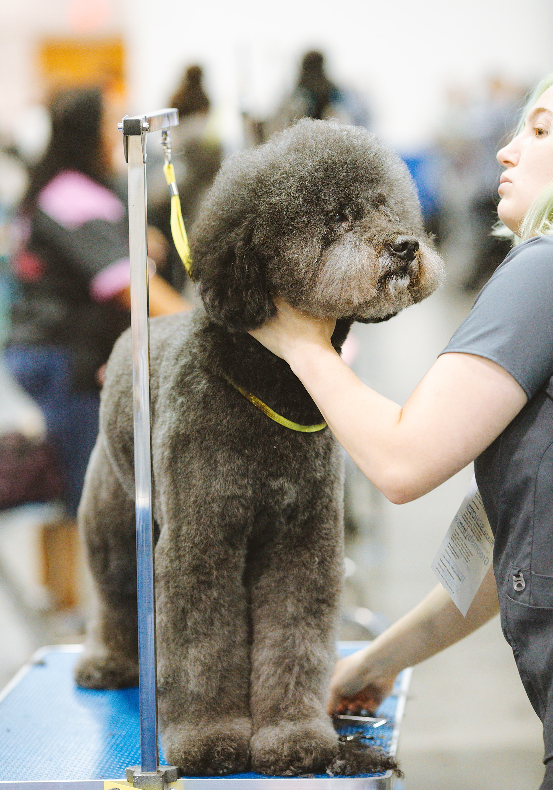
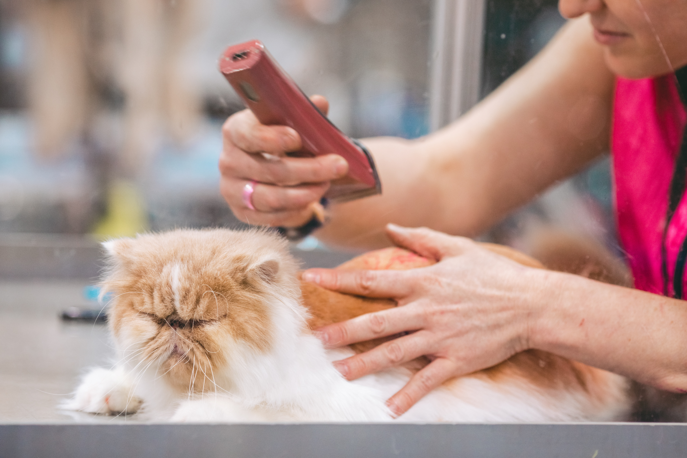
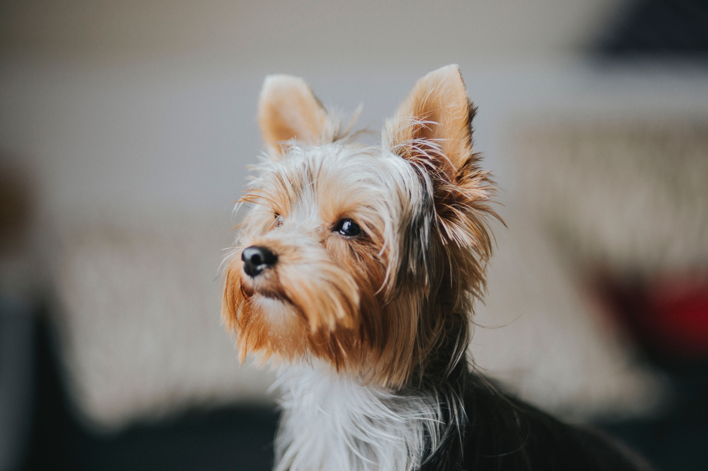
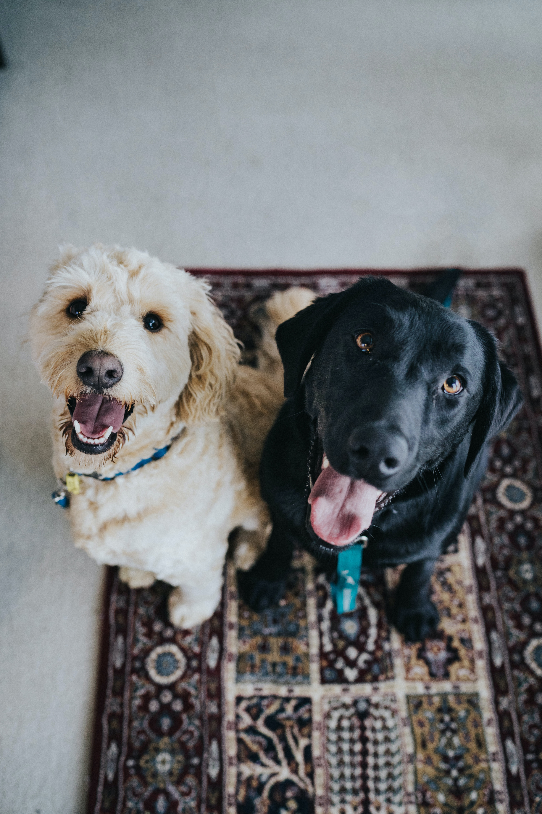
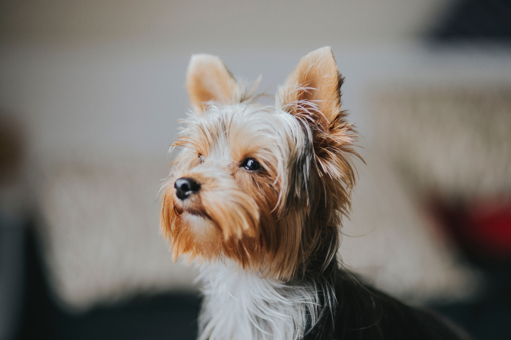
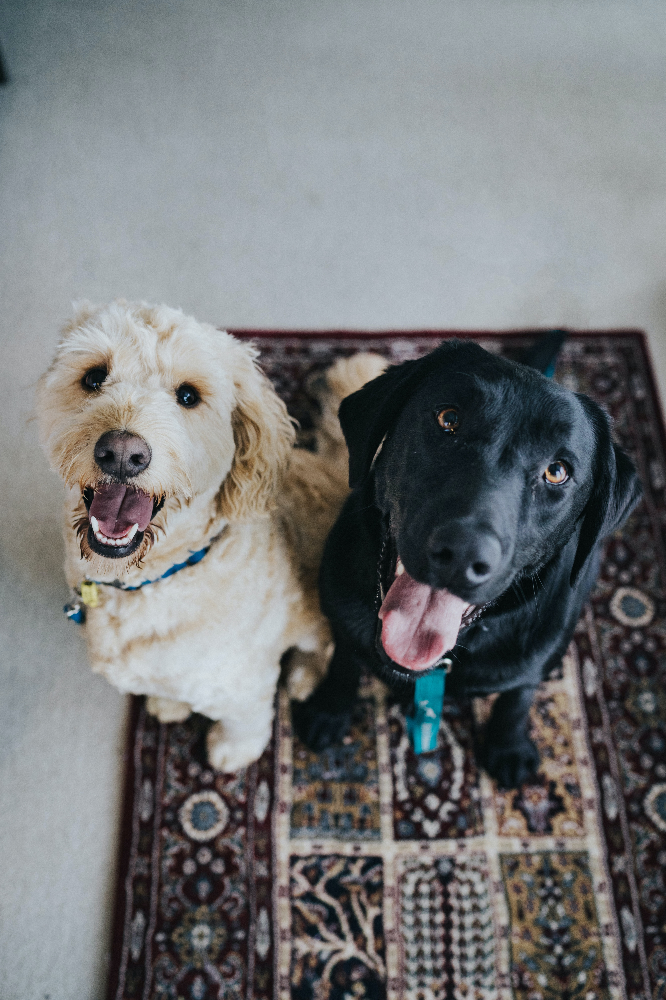

Service

Temporal tattoos
It is a form of expression of the owner through his dog,
or for his dog to express himself through a temporary
tattoo.It is a common service in special seasons.

face geometry
The purpose is to make the pets famous
among the owner's social and virtual circle.

Colorbox
Owners are coloring their dogs in a variety of
rainbow shades, the color is temporary
and washes out easily.

Jewelry and accessories
in vogue
These products are to decorate the
puppies with jewelry,they are also key
to cross-selling with the service.
About Us
Our world-class grooming service combines passion, experience and exceptional care to meet
the grooming needs of your beloved pets. At our premium grooming salon, we offer a relaxing
and stylish environment where your furry companions will not only look good, but also feel
refreshed and rejuvenated. Our friendly and experienced staff provide a personalized and comfortable
experience, catering to the unique needs of each pet. We have expert groomers trained in the latest
grooming techniques and knowledgeable of different breeds, coat types,and temperaments. We prioritize
the well-being and comfort of your pets, using soft, high-quality products as well as state-of-the-art
equipment to ensure exceptional results and minimize any discomfort. Our expert groomers pay meticulous
attention to every detail, tackling all aspects of grooming, from nail trimming, ear cleaning and teeth
brushing to tacking, seeding and styling. Our trained staff skillfully and gently handle nervous
or timid pets, creating an environment of trust.


 


